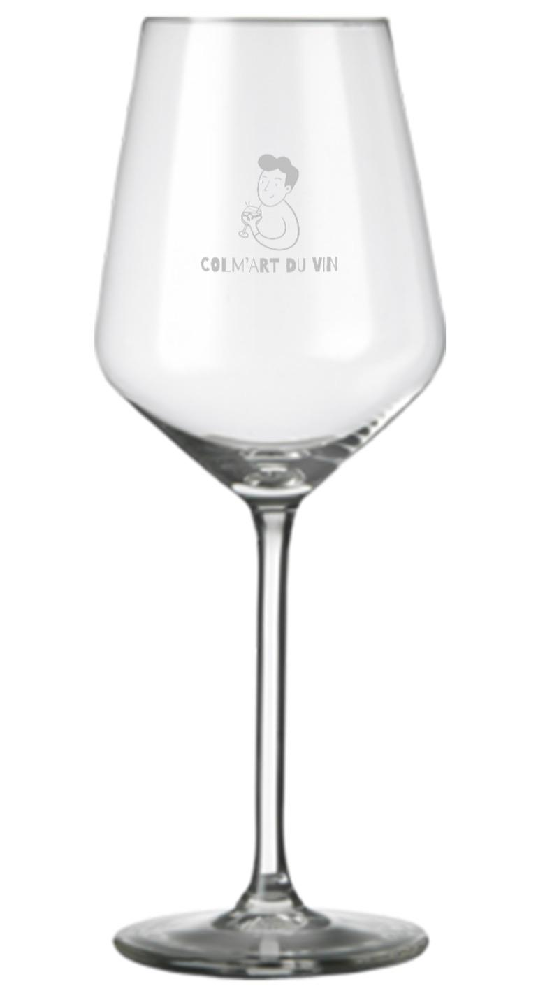
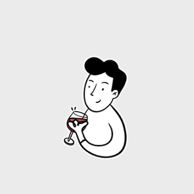
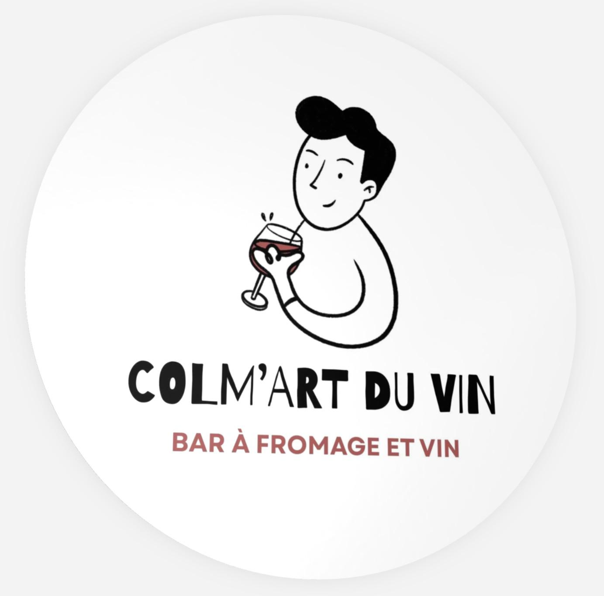
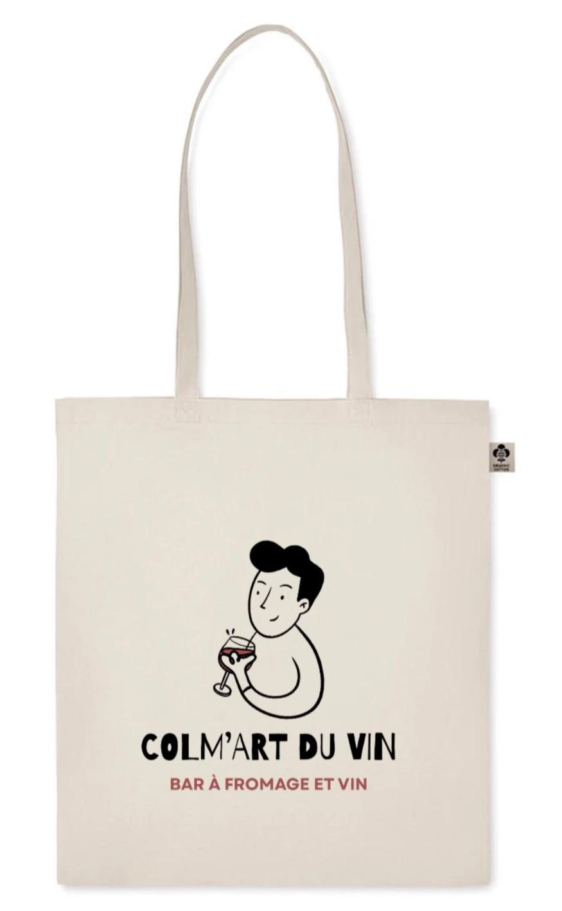
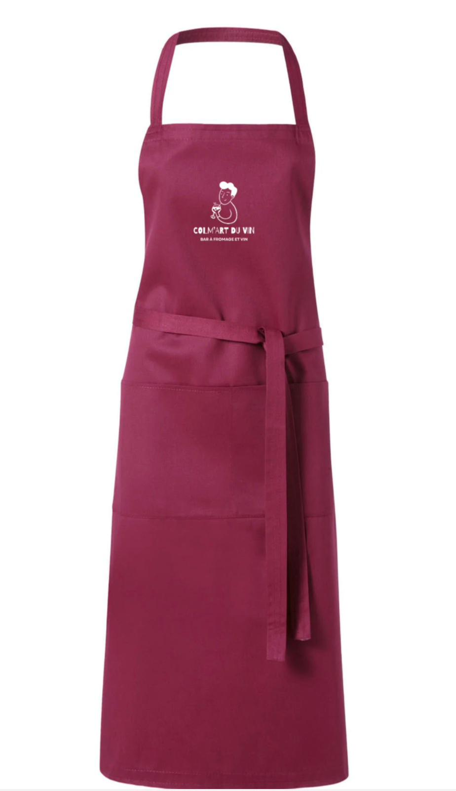
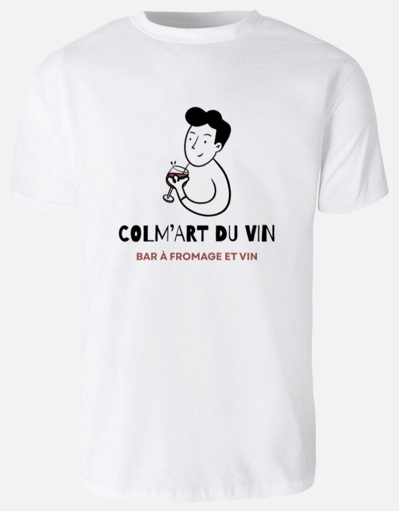
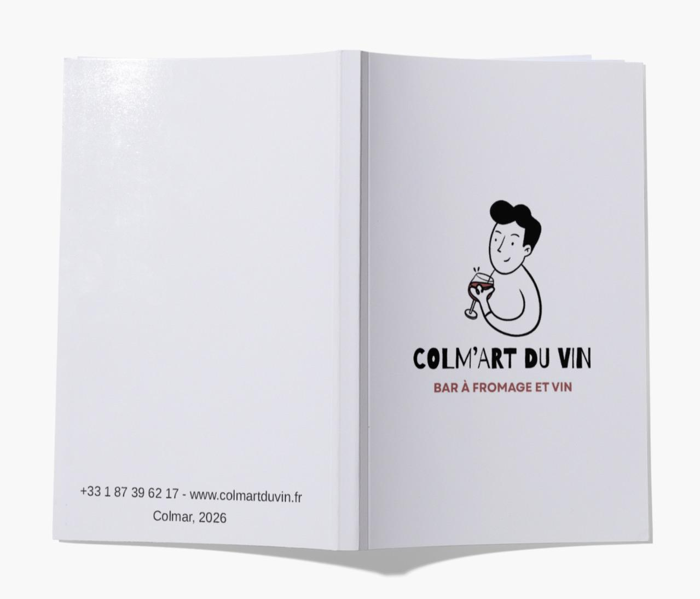

Art de table
Verre Signature
Verre à vin élégant avec logo Colm’Art du Vin.

Colm’Art du Vin RéserverBar à fromage et vin à Colmar
Un lieu chaleureux pour déguster, partager et découvrir les saveurs de notre région.
Le concept
Colm’Art du Vin est un lieu pensé pour les amateurs de vin, de fromage et de produits authentiques. Ici, on vient pour déguster, découvrir, partager et profiter d’une ambiance conviviale au cœur de Colmar.
Notre concept repose sur une idée simple : faire découvrir le meilleur du terroir à travers des vins sélectionnés, des fromages de caractère et une atmosphère chaleureuse.

Qui sommes-nous ?
Colm’Art du Vin est avant tout une aventure humaine. Une bande d’amis passionnés par le vin, le fromage, les produits authentiques et les moments simples partagés autour d’une table.
Notre envie est de mettre en lumière le terroir, les producteurs, les saveurs locales et l’art de vivre alsacien.
Nous voulons faire découvrir des vins de caractère, des fromages soigneusement choisis et créer un lieu où chaque visite devient un moment de partage.
Une vraie passion pour le vin.
Des saveurs locales à découvrir.
Des moments simples et conviviaux.
Boutique Signature
La boutique Colm’Art du Vin prolonge l’expérience du bar au-delà d’un verre partagé. Chaque produit reprend l’esprit de la maison : le vin, le fromage, la convivialité et l’élégance simple de Colmar.

Art de table
Verre à vin élégant avec logo Colm’Art du Vin.

Goodies
Assiette élégante et personnalisée aux couleurs de Colm’Art du Vin.

Lifestyle
Sac coton naturel avec illustration originale.

Textile
Tablier de service élégant aux couleurs du vin.

Textile
Tee-shirt aux couleurs de notre amour du vin.

Goodies
Un cahier pour noter vos meilleurs moments chez nous.
Contact
Envoyez un message pour réserver une table ou commander un produit boutique.